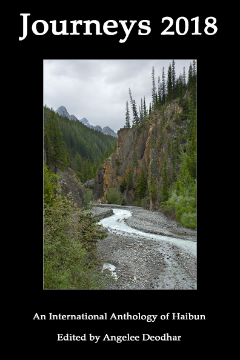
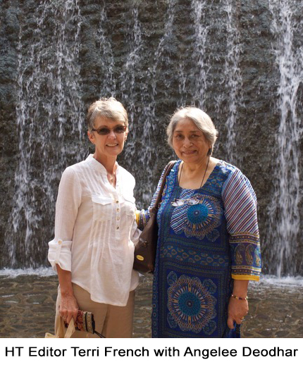

In Memoriam:
Tributes to Angelee Deodhar (1947-2018)
Angelee Deodhar—poet, anthologist, frequent contributor to Haibun Today, and friend to many in the haibun community—passed away unexpectedly on June 28 in Chandigarh. The following essays serve as obituary, tribute, and reminder of a warm spirit that enriched the haikai community.
Love and Light: Remembering Angelee by Rich Youmans
To her many friends in the haiku community, the words “Love and Light” are instantly recognizable as the standard closing Angelee Deodhar used in her e-mails. Sometimes those messages contained energetic explorations of the haibun or other forms (such as zuihitsu, a recent enthusiasm, which she once described as a “boogie-woogie with words”). Sometimes they contained her latest digital haiga, or a contest announcement, or a simple greeting or word of appreciation. Above all, they sought to connect—across cultures, across divides.
“Literature must serve as a bridge across barriers of language and our limited knowledge of world cultures,” she once wrote to me in an e-mail. That belief—a desire, really—could be seen in all of her haikai activities, and especially in her three Journeys anthologies, those explorations of the haibun genre that ranged from the form’s roots to its current incarnations. In essence, Angelee could be considered an ambassador of haiku and haibun, even though her love for these forms did not come until later in life.
Born in Lahore, India, shortly after the passage of the Indian Independence Act, Angelee was the daughter of an army doctor, and from early on she wanted to follow in his footsteps. (As she recounted in a 2008 interview in Wonder Haiku Worlds, she used to “doctor” her dolls, and an old stethoscope was among her favorite toys.) She also developed a fondness for the arts—literature, music, and especially the visual arts. “My aunts told me that ever since I could hold a pencil I would be drawing their portraits or flowers or something,” she recalled.
Her desire to enter the medical profession ultimately took her to the Armed Forces Medical College, one of India’s premier institutes, where she studied ophthalmology. After graduating in 1971 she began working for various mission hospitals as an eye surgeon. In 1981 she and the late Shridhar D. Deodhar, a renowned rheumatologist, married and ultimately settled in Chandigarh; the couple had one son, Ananth, now a software engineer (who regularly helped his mother format her Journeys anthologies).
It wasn’t until 1989 that Angelee discovered haiku. A recurrent pulmonary thromboembolism had required several hospitalizations, and during one of those stays she picked up by chance a U.S. poetry journal, Potpourri. The haiku she read there was, as she later described, “love at first read.” Those haiku compelled her to seek more—which, at that time in India, was not easily done. She found a few books—including what became a favorite, The Haiku Handbook by William J. Higginson and Penny Harter—but the paucity of available offerings led her to begin doing her own translations of classic haiku, from English into Hindi. That passion that led to six books that presented the haiku of Shiki, Issa, and others.
She also wrote haiku, sending out work that soon found their way into the various journals. But she didn’t stop there: She immersed herself in the haiku community, joining multiple associations worldwide and presenting papers at various international conferences.
Her passion for haikai eventually led her to haibun, which she pursued with just as much gusto—as writer, anthologist, and, most recently, judge for the Genjuan International Haibun Contest. Angelee’s first appearance in Haibun Today came in September 2013, and after that it was a rare issue that did not contain one of her pieces. This is particularly remarkable given that, during the five years between then and now, she also compiled her trilogy of Journeys anthologies. The first appeared in 2014, followed by Journeys 2015 and Journeys 2017. (Soon to be released is Journeys 2018, an update of the original volume, with 40 additional haibun.) Together, the volumes contained more than 400 haibun and essays from scores of writers, both contemporary practitioners as well as pioneers—“early adapters,” as Angelee called them. There are gaps: In some cases, Angelee couldn’t reach notable writers to get reprint permission, or the reprint costs proved too exorbitant. But the sheer breadth of the writing is impressive, presenting work from around the globe.
“To me the essence of all three Journeys is that they represent transculturalism, not merely multiculturalism,” she once wrote to me. “Transculturalism is defined as ‘seeing oneself in the other.’ Transcultural is in turn described as "extending through all human cultures.’” Haiku and haibun provided the means for Angelee to do just that—to extend, to connect, to bridge. Love and light, indeed.
A Memory of Angelee by Terri French
My husband, Ray, and I were fortunate enough to meet Angelee in Chandigarh when we visited India in November of 2016. Ray had business in Nepal and I just couldn't be that close to India without meeting some of my Indian friends. On this particular trip, we also met with Shloka Shankar and her family in Bangalore and Jazz Machanda in New Delhi. We met Angelee at The Rock Garden of Chandigarh, also known as Nek Chand's Rock Garden after its founder, a government official who started the garden secretly in his spare time in 1957. We then went to the Government Museum and Art Gallery. We had a very enjoyable lunch at a Chinese restaurant and went to a local sweet shop afterwards to sample many of the nuts and confections. Angelee insisted on supplying us with a small box of sweets to enjoy later in our hotel. We perused one of her favorite bookstores; I purchased a Haruki Murakami novel and Angelee bought my husband (whom she referred to as “Chef Long Locks”) an Indian cookbook. Angelee was a very gracious host and a wonderfully informed tour guide. She was so proud of her city, its history, culture and modernization. I am so happy that I decided to visit Chandigarh and meet my friend. I respected her so much—her intelligence, creativity, and witty sense of humor. Her love & light will shine on forever.
Tribute to Angelee Deodhar by Patricia Prime
I was very sad to hear of the recent death of friend and fellow poet, Angelee Deodhar. We corresponded by email over several years and Angelee sent me several photographs of her family, friends and the country where she lived. I have many Indian friends through poetry, editing and reviewing their books. My condolences to Angelee’s family and to the Indian poetry community which will be saddened by the loss of a wonderful friend, mentor and spiritual lady.
Selected Haibun by Angelee Deodhar from Haibun Today
 Moonset Moonset
Ratatouille
The Great Railway Bazaar
Cantonment
Enso
|